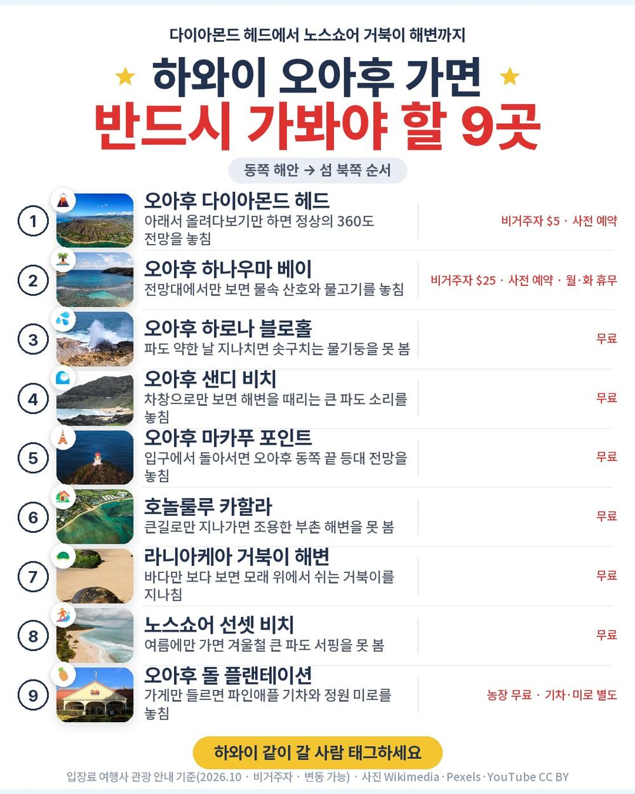
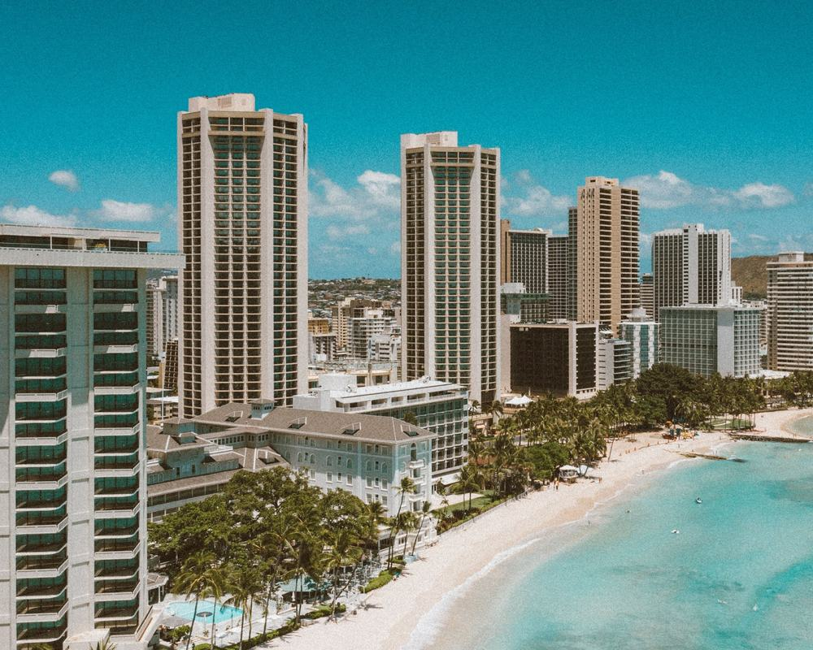
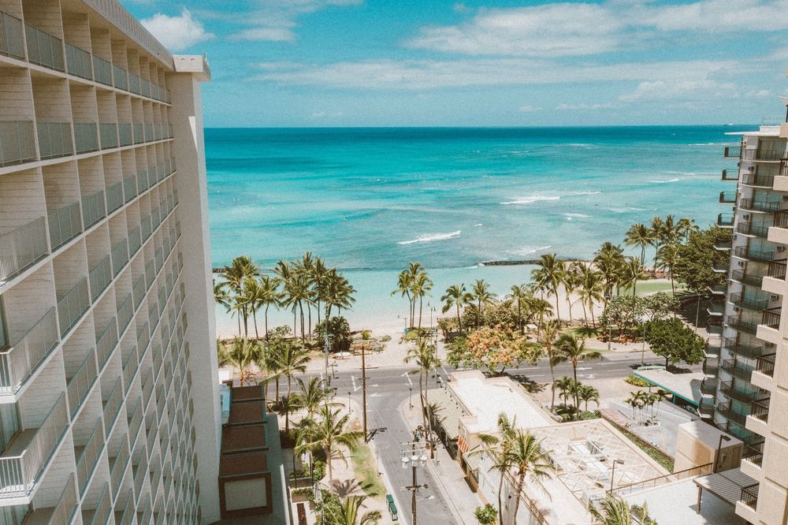
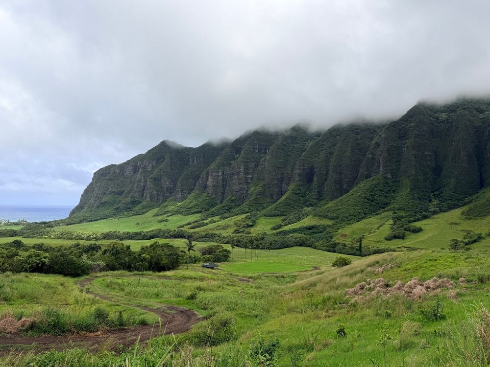
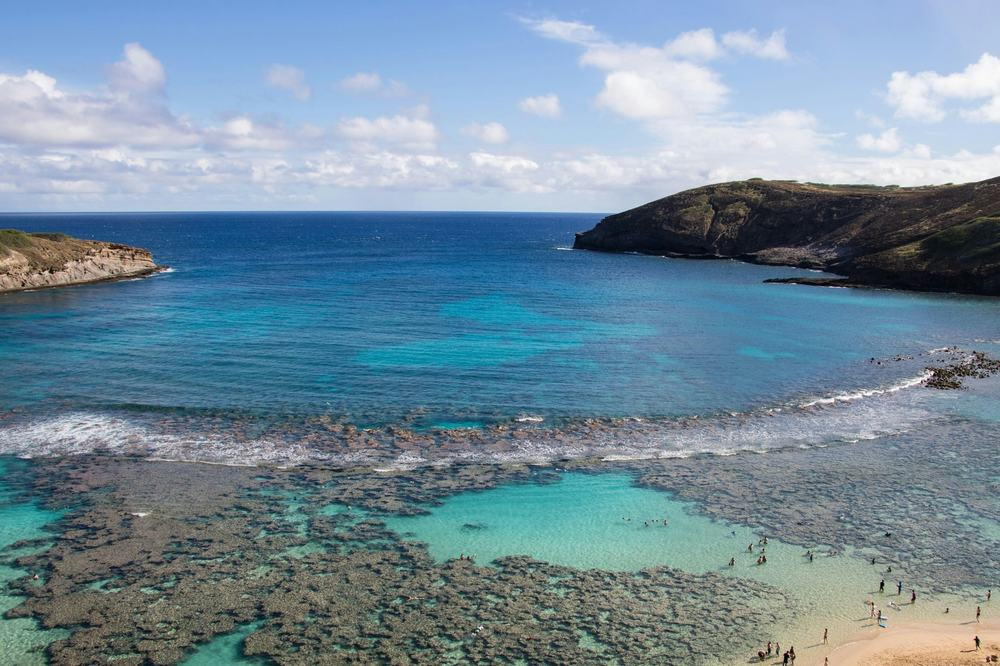
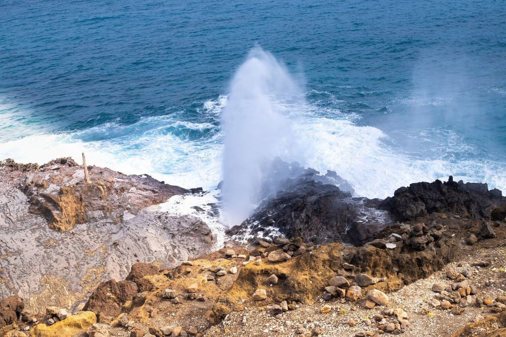
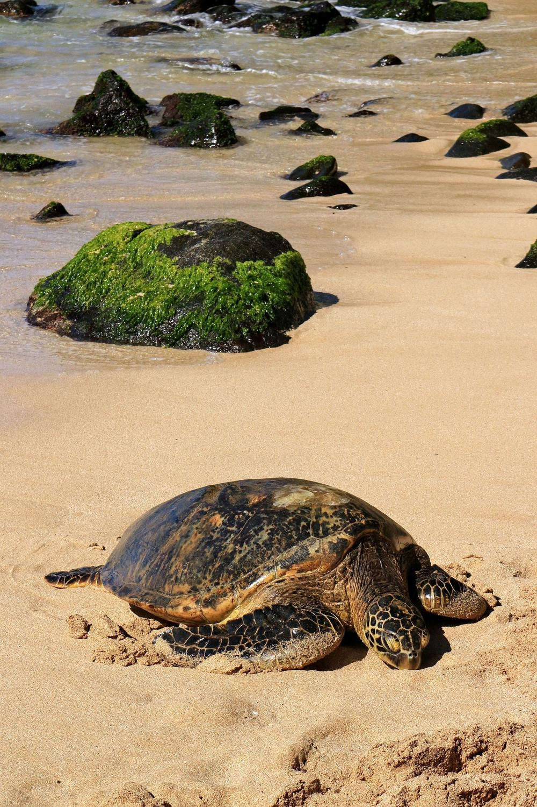
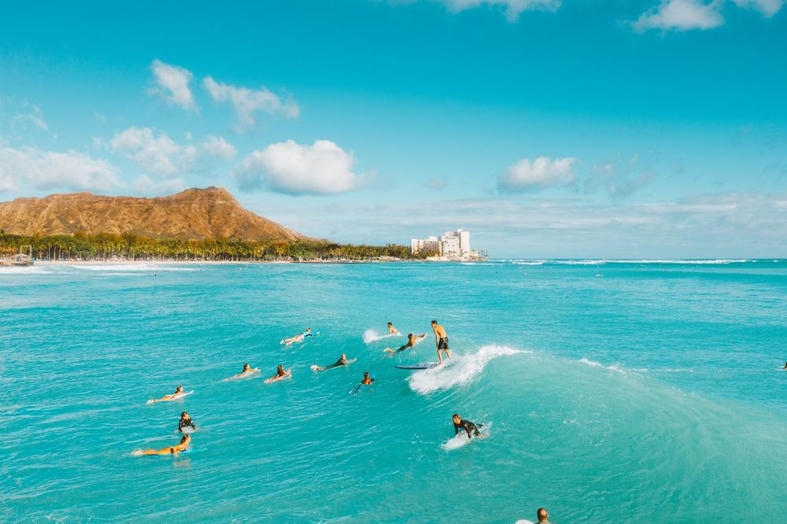
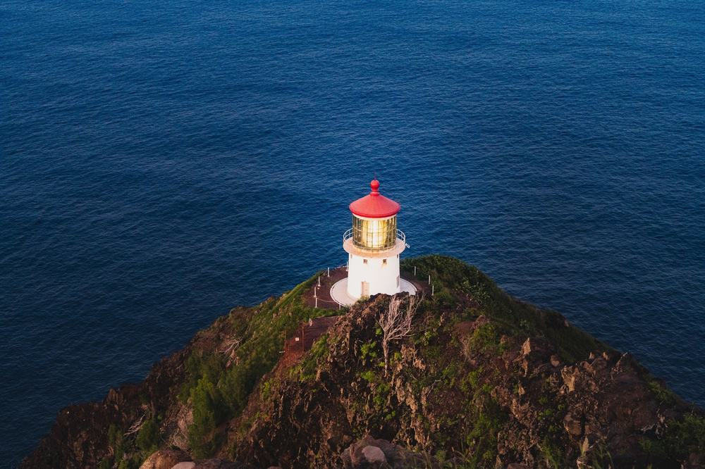

하와이 상품을 보다 보면 둘 중 하나임. 항공·호텔만 묶은 에어텔이거나, 매일 버스로 끌고 다니는 패키지. 처음 가는 하와이를 혼자 다 짜기는 겁나고, 그렇다고 엿새 내내 단체로 움직이기도 아까움.
그러다 모두투어 하와이 6일 상품을 봤음. 앞의 이틀은 가이드 차로 섬을 돌고, 뒤의 이틀은 와이키키에서 자유임. 호텔은 해변 앞 하얏트 리젠시 4연박.
결론 — 추천. 대한항공 직항, 하얏트 리젠시 와이키키 4연박에 리조트피 포함, 관광 이틀, 식사 8회(랍스터·카후쿠 새우·불고기 특식). 다만 명소 안에 들어가는 게 목적인 분(다이아몬드 헤드·하나우마 베이는 차창), 모든 끼니를 챙겨 받고 싶은 분(자유일 4끼), 도착 당일 관광이 힘든 분은 아님.
323만 7,600원에 무엇이 들었고 현지에서 얼마가 더 나가는지 원문을 하나씩 대조해 봤음.
| 항목 | 내용 |
|---|---|
| 가격 | 1인 3,237,600원 (성인 · 2인 1실 기준 · 10월 출발) |
| 여행사 | 모두투어 (단독행사) |
| 항공 | 대한항공 직항 · 인천 20:50 → 호놀룰루 09:40 / 호놀룰루 11:40 → 인천 17:35 |
| 숙소 | 하얏트 리젠시 와이키키 4연박 · 상품명 기준 오션프런트 · 리조트피 포함 |
| 일정 | 4박 6일 · 관광 2일 + 자유 2일 · 미니버스 · 한국어 가이드 · 식사 8회 |
| 가는 곳 | 다이아몬드 헤드 · 카할라 · 하나우마 베이 · 하로나 블로홀 · 샌디 비치 · 마카푸 포인트 · 선셋 비치 · 거북이 해변 · 돌 파인애플 농장 · 와이켈레 아울렛 |
▶ 내 출발일 오늘 기준 요금 확인 (제휴 링크 · 예약 시 수수료를 받으며 가격은 같습니다)
▶ 10월 11일 기준 하와이 패키지 최저 234만 3,600원부터 — 출발일별 값 한 화면에: 비교 페이지
| 순서 | 다루는 것 | 한 줄 결론 |
|---|---|---|
| 1 | 구성 뜯어보기 | 호텔·리조트피·공항 셔틀 포함, 현지 경비 60달러 |
| 2 | 일정 살펴보기 | 명소 상당수가 차창, 버스는 2일차에 몰림 |
| 3 | 자유여행 VS 패키지 | 항공만 115만원 | 같은 날 직항 항공권이 상품가의 3분의 1 |
요약 — 직항 왕복·하얏트 리젠시 4박·리조트피·식사 8회·관광 이틀·공항 미팅과 샌딩·여행자보험이 들어 있음. 현지에서 반드시 내는 돈은 가이드·기사 경비 1인 60달러이고, ESTA는 따로 신청해야 함.

포함 항목을 줄로 세우면 이럼.
- 인천–호놀룰루 대한항공 직항 왕복 + 유류할증료·세금
- 하얏트 리젠시 와이키키 4박 — 2인 1실, 리조트피 포함
- 식사 8회 — 조식 4회 호텔식, 특식 3종(중국식 랍스터·카후쿠 새우·불고기 정식)
- 1일차 동부해안 · 2일차 섬일주 관광, 미니버스
- 공항 미팅·샌딩 셔틀 · 한국어 가이드 · 여행자보험
눈여겨볼 건 리조트피가 상품가 안에 들어 있다는 점임. 하와이 호텔은 방값과 별개로 리조트피를 매일 따로 받는데, 포함사항에 '호텔 숙박비 및 리조트피'로 적혀 있음. 체크아웃 때 계산서를 다시 볼 일이 하나 줄어듦.
출발일별 요금 확인하기
https://naver.me/52awtalg

객실은 상품명에 오션뷰에서 오션프런트로 올려 준다고 적혀 있음. 다만 상품 정보의 객실 타입 칸은 비어 있어서, 예약할 때 한 번 더 확인하는 게 맞음.
알고 갈 점도 있음. 체크인은 가이드 없이 직접 해야 함. 호텔 주차가 어려워서라고 안내돼 있고, 여권과 해외 승인되는 신용카드가 필요함. 디파짓으로 잡힌 금액은 쓴 게 없으면 체크아웃 뒤 4~8주 사이에 풀림.
객실에 슬리퍼와 칫솔·치약이 없음. 챙겨 가야 함.

쇼핑은 1회. 기념품·토산품 잡화점 한 곳, 30분임. 2일차엔 와이켈레 프리미엄 아울렛에서 약 2시간 쇼핑 일정이 있음.
선택관광은 자유일정 이틀에 고를 때만 냄. 원문에 참여하지 않아도 추가 비용이나 일정상 불이익이 없다고 적혀 있음.
| 선택관광 | 1인 금액 | 비고 |
|---|---|---|
| 마우이 데이투어 | 450달러 | 새벽 픽업·저녁 도착 · 이웃섬 가이드 팁 10달러 별도 |
| 빅아일랜드 데이투어 | 400달러 | 화산국립공원 · 굳은 용암 지대 관광 |
| 카우아이 데이투어 | 400달러 | 와이메아 캐니언 · 와일루아 폭포 |
| 와이키키 터틀 스노클링 | 145달러 | 08:00~13:00 · 스낵·음료 |
| 렌터카 (24시간) | 150달러부터 | 국내·국제 운전면허 둘 다 필요 |
자유일정엔 모두투어 렌탈 서비스도 있음. 휴대용 유모차·플러그 어댑터·부기보드·구명조끼·카시트를 보증금만 내고 빌림. 출발 일주일 전까지 신청해야 함.
| 항목 | 금액 | 비고 |
|---|---|---|
| 가이드·기사 경비 | 약 161,000원 | 1인 60달러 × 2 · 현지 지불 (1달러 약 1,342원) |
| ESTA (미국 전자여행허가) | 약 107,000원 | 직접 신청 1인 40달러 × 2 · 대행이면 1인 8만원 |
| 자유일정 식사 4끼 | 고르는 식당 따라 | 3·4일차 점심·저녁 · 테이블 팁 별도 |
| 선택관광 | 0원 | 안 고르면 0원 |
| 합계 (2인) | 약 268,000원 + 자유식 | 상품가 647만 5,200원 + 약 27만원 = 약 675만원 |
한 사람으로 치면 약 338만원에 자유일정 식비가 더해짐.
1절 자주 나오는 질문
Q. 가이드 경비는 따로 내나요?
A. 냄. 1인 60달러를 현지에서 냄. 성인·소아 같은 금액이고 상품가 밖임. 식사 테이블 팁도 별도임.
Q. 출발이 확정된 상품인가요?
A. 원문 출발 상태는 확정이 아님. 최소 2명부터 예약을 받는 상품이라, 예약할 때 그 날짜가 확정인지 물어보는 게 좋음.
Q. 인솔자가 같이 가나요?
A. 안 감. 공항에서 모두투어 피켓으로 현지 가이드를 만나고, 가이드가 직접 운전하는 드라이빙 가이드로 진행함.
요약 — 1일차 도착 후 동부해안, 2일차 섬일주(거북이 해변·돌 파인애플 농장·와이켈레 아울렛), 3·4일차 자유, 5일차 오전 귀국. 다이아몬드 헤드·하나우마 베이·선셋 비치는 차창 관광이고 버스는 2일차에 몰려 있음.

| 일차 | 가는 곳 | 식사 | 숙소 |
|---|---|---|---|
| DAY 1 | 인천 20:50 출발 → 호놀룰루 09:40 → 다이아몬드 헤드·카할라·하나우마 베이(차창) → 하로나 블로홀(정차) → 샌디 비치·마카푸 포인트(정차 또는 차창) | 조 기내식 · 중 특별식 · 석 특별식 | 하얏트 리젠시 와이키키 |
| DAY 2 | 섬일주 — 선셋 비치(차창) → 거북이 해변 → 돌 파인애플 농장 → 와이켈레 아울렛 약 2시간 | 조 호텔식 · 중 특별식 · 석 한식 | 같은 호텔 |
| DAY 3 | 전일 자유일정 (선택관광: 이웃섬 데이투어) | 조 호텔식 | 같은 호텔 |
| DAY 4 | 전일 자유일정 (선택관광: 쿠알로아 랜치·스노클링·렌터카) | 조 호텔식 | 같은 호텔 |
| DAY 5 | 개별 체크아웃 → 가이드 미팅 → 호놀룰루 11:40 출발 | 조 호텔식 · 기내식 | — |
| DAY 6 | 인천 17:35 도착 | — | — |
| 일차 | 버스 이동 | 걷기 | 포함 식사 |
|---|---|---|---|
| DAY 1 | 약 2시간 | 적음 | 조 기내식 · 중 특별식 · 석 특별식 |
| DAY 2 | 약 4시간 | 보통 | 조 호텔식 · 중 특별식 · 석 한식 |
| DAY 3 | 거의 없음 | 본인 선택 | 조 호텔식 |
| DAY 4 | 거의 없음 | 본인 선택 | 조 호텔식 |
| DAY 5 | 약 0.5시간 | 적음 | 조 호텔식 · 중 기내식 · 석 기내식 |
| DAY 6 | 거의 없음 | 적음 | 포함 끼니 없음 |
| 합계 | 약 6.5시간 | - | 상품 표기 8회 (기내식 3회 별도) |
요약 — 버스 이동은 6일 동안 약 6.5시간이고, 그중 4시간이 DAY 2임. 걷는 양은 DAY 2가 보통 수준이고 자유일정 이틀은 본인 선택임.

밤 8시 50분에 떠나 7시간 55분을 날면 현지는 같은 날 아침 9시 40분임. 내리자마자 가이드 차로 동부해안을 돎.
다이아몬드 헤드 전망대, 카할라 부촌, 하나우마 베이는 차창 관광임. 차에서 내리는 곳은 하로나 블로홀이고, 샌디 비치와 마카푸 포인트는 그날 교통 사정에 따라 정차하거나 차창으로 봄. 저녁은 특별식.

오후 섬일주는 북쪽 해안으로 감. 겨울에 큰 파도가 서는 선셋 비치를 차창으로 지나고, 거북이 해변에선 내려서 바다거북을 봄. 정식 이름은 라니아케아 비치임.
그다음 돌 파인애플 농장. 농장 입장은 무료이고, 20분짜리 파인애플 기차와 정원 미로는 따로 요금이 있음. 마지막으로 와이켈레 아울렛에서 약 2시간 쇼핑, 오가는 데도 약 2시간이라 이날 버스만 약 4시간임. 저녁은 한식.

이틀 다 조식만 포함이고 나머지는 자유임. 호텔 길 건너가 바로 와이키키 해변이라 바다에서 하루를 보내도 됨.
차창으로 지나친 곳에 직접 가 보고 싶으면 이날 잡으면 됨. 상품 안내 기준으로 하나우마 베이는 비거주자 25달러에 사전 예약, 월·화 휴무임. 다이아몬드 헤드는 비거주자 5달러에 사전 예약임.
2절 자주 나오는 질문
Q. 많이 걷나요?
A. 관광하는 이틀은 보통 이하임. 명소 상당수가 차창이고, 내려서 걷는 곳은 하로나 블로홀·거북이 해변·돌 파인애플 농장 정도임. 오래 걷기가 불편하시면 가이드에게 미리 말해 두면 됨.
Q. 하나우마 베이에 들어가나요?
A. 일정에선 안 들어가고 차창으로 봄. 들어가 보려면 자유일정 날 직접 예약해야 함. 비거주자 25달러, 사전 예약, 월·화 휴무이고 입장 때 9분짜리 안내 영상을 봄.
Q. 10~11월 하와이 날씨는 어떤가요?
A. 호놀룰루 1991–2020 평년값으로 10월 낮 최고가 30.5도, 밤 최저가 23.3도, 11월 낮 최고가 28.9도임. 반팔에 실내 냉방용 얇은 겉옷 하나면 됨. 이웃섬 고지대는 쌀쌀할 수 있어 점퍼나 카디건을 챙기라고 안내돼 있음.
요약 — 같은 날 인천–호놀룰루 직항 왕복 항공권만 1인 115만 4천원임. 여기에 와이키키 호텔 4박·리조트피, 관광 이틀의 차편과 가이드, 공항 왕복, 식사 8회를 따로 얹어야 함.

같은 일정을 혼자 짠다고 치고 항목을 세워 봄. 확인된 값은 항공뿐이라 나머지는 금액을 지어내지 않고 비워 둠.
| 항목 | 금액 | 근거 |
|---|---|---|
| 인천–호놀룰루 직항 왕복 | 1,154,400원 | 패키지와 같은 출발일 (2026-10-11 마이리얼트립 조회) |
| 하얏트 리젠시 와이키키 4박 + 리조트피 | 날짜·객실별 확인 | 오션프런트 객실은 날짜마다 값이 다름 |
| 식사 8회 | 직접 부담 | 특식 3회 포함 끼니에 맞춤 |
| 공항 ↔ 와이키키 왕복 | 직접 부담 | 셔틀·택시 |
| 동부해안·섬일주 이동 | 직접 부담 | 렌터카 24시간 150달러부터 또는 투어 |
| 여행자보험 | 직접 부담 | 6일 기준 |
| 가이드 | — | 자유여행은 없음 |
| 합계 | 항공만 1,154,400원 | 나머지는 직접 예약 |
직접 짜실 분은 이 날짜 항공권부터 보세요 — https://myrealt.rip/uxmu66 (마이리얼트립 제휴 링크)
패키지는 3,237,600원에 가이드 경비 60달러(약 8만원)를 더해 약 332만원임.
항공권 값이 상품가의 3분의 1을 넘음. 남는 약 208만원 안에 호텔 네 밤과 리조트피, 식사 여덟 번, 관광 이틀, 공항 왕복이 다 들어감.
- 하와이 첫날 공항에서 호텔까지를 혼자 해결하지 않아도 됨
- 동부해안과 노스쇼어를 운전 없이 한 번씩 돎 — 렌터카는 국내·국제 면허를 둘 다 챙겨야 함
- 자유일정 이틀은 그대로 남아 있어서, 자유여행의 장점도 반쯤 가져감
계산표에 가이드 행이 비어 있는 게 그 뜻임 — 0원이 아니라 살 수 없는 것임.
| 자유여행이 맞음 | 패키지가 맞음 |
|---|---|
| 하와이를 여러 번 가 봤음 | 하와이가 처음임 |
| 렌터카 운전이 익숙함 | 첫 이틀은 안내를 받고 싶음 |
| 하나우마·다이아몬드 헤드 안까지 볼 것임 | 명소는 차창으로 훑어도 됨 |
| 호텔을 직접 골라 싸게 잡을 수 있음 | 해변 앞 호텔을 한 번에 정하고 싶음 |
3절 자주 나오는 질문
Q. 자유여행이 더 싸지 않나요?
A. 항공만 1인 115만 4천원이고, 와이키키 해변 앞 호텔 4박과 리조트피가 남은 큰 비용임. 호텔 값은 날짜와 객실마다 달라 이 글에선 금액을 적지 않았음. 같은 출발일 호텔 값을 직접 견줘 보는 게 정확함.
Q. 혼자 가도 되나요?
A. 상품가는 2인 1실 1인 기준임. 혼자 쓰는 요금은 원문에 안 나와 있어서 예약할 때 물어봐야 함.
Q. 비자가 필요한가요?
A. 미국 전자여행허가 ESTA가 필요함. 직접 신청하면 1인 40달러, 여행사 대행은 1인 8만원이고 대행은 출발 14일 전까지 신청해야 함.
정리하면 이럼.
추천함. 323만 7,600원에 대한항공 직항, 와이키키 해변 앞 하얏트 리젠시 네 밤과 리조트피, 식사 8회에 랍스터·카후쿠 새우·불고기 특식, 관광 이틀이 들어 있음. 현지에서 반드시 내는 돈은 가이드 경비 60달러와 ESTA임.
| 맞는 사람 | 안 맞는 사람 |
|---|---|
| 해변 앞 호텔에서 쉬고 싶은 분 | 명소 안에 들어가는 게 목적인 분 (일정은 차창) |
| 하와이가 처음인 분 | 모든 끼니를 챙겨 받고 싶은 분 (자유일 4끼) |
| 관광 반, 자유 반을 원하는 분 | 도착 당일 바로 관광이 힘든 분 |
걸리는 점은 상품 흠이라기보다 맞는 사람과 안 맞는 사람을 가르는 조건에 가까움. 부모님과 처음 하와이를 가는 거라면, 앞 이틀은 맡기고 뒤 이틀은 해변에서 쉬는 이 구성이 편함.
오늘 기준 출발일별 요금 보기
https://naver.me/52awtalg
같은 목적지 다른 여행사 패키지, 쇼핑·선택관광·가이드 경비까지 비교
https://pkg-lab.com/go/?q=%ED%95%98%EC%99%80%EC%9D%B4&utm_source=blog&utm_medium=post&utm_campaign=daily
노랑풍선 상하이 패키지 여행 94만 9천원, 추가금 진짜 없을까?
https://blog.naver.com/robotnady10/224436862236
교원투어 오사카 패키지 여행 79만 9천원, 추가금 진짜 없을까?
https://blog.naver.com/robotnady10/224435948759
이 글에는 네이버·마이리얼트립 제휴 링크가 포함되어 있으며, 링크를 통해 예약하시면 일정 수수료를 받습니다. 가격은 동일합니다. 가격과 구성은 2026년 10월 11일 확인 기준이며 출발일에 따라 달라질 수 있습니다.
▶ 이 상품, 영상으로 보기 (유튜브)
▶ 하와이 패키지 오늘 값 나란히 비교
▶ 같은 목적지 다른 여행사 패키지, 쇼핑·선택관광·가이드 경비까지 비교: pkg-lab.com
_(20113144819).jpg){kind=link}